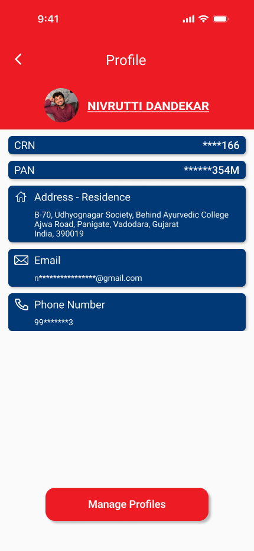

Kotak Mahindra Bank App
This project explores a conceptual redesign of the Kotak Mahindra Bank mobile application with the objective of improving usability, simplifying everyday banking tasks, and creating a more intuitive digital experience. The redesign focuses on reducing cognitive load, strengthening visual hierarchy, and making essential financial actions easier to access while maintaining the trust and familiarity expected from a banking platform.
The Challenge
Mobile banking applications are expected to provide quick, secure, and reliable access to financial services. However, as new features are introduced over time, interfaces often become increasingly complex, making common tasks harder to complete. The challenge was to rethink the experience by simplifying navigation, improving content organization, and reducing unnecessary friction while preserving user confidence.
Key Issues Identified
- Important banking actions competed for user attention.
- Information-heavy screens increased cognitive load.
- Navigation became less intuitive as additional features were introduced.
- Users needed faster access to their most frequent banking tasks.
- Financial information required greater visual clarity and hierarchy.
Design Strategy
The redesign focused on creating a cleaner and more intuitive banking experience by prioritizing frequently used actions, improving information hierarchy, and reducing visual complexity.
Design Priorities
- Simplify everyday banking interactions.
- Improve visibility of essential financial information.
- Reduce cognitive load through cleaner layouts.
- Create a consistent visual hierarchy across screens.
- Maintain familiarity while modernizing the overall experience.
UX Evaluation & Insights
The redesign began with a heuristic evaluation of common mobile banking patterns and as assessment of areas where usability could be improved. Rather than reinventing familiar workflows, the objective was to identify opportunities to simplify navigation, prioritize key information, and improve the overall user experience.
Key Insights:
- Frequently used actions should remain immediately accessible.
- Financial information benefits from stronger visual grouping.
- Clear hierarchy improves scanning and reducing decision time.
- Consistency across screens builds familiarity and confidence.
- Simplified layouts help users complete tasks more efficiently.
Ideation & Exploration
The exploration phase focused on reducing interface complexity while preserving functionality. Multiple layout variations were considered to determine how account summaries, quick actions, and financial insights could be presented in a clearer and more accessible manner.
Design Considerations:
- Prioritize everyday banking tasks.
- Improve readability of financial information.
- Reduce unnecessary visual noise.
- Simplify navigation between key features.
- Design for speed, clarity, and user confidence.
Final Design
The final design introduces a cleaner and more focused banking experience that prioritizes clarity without compromising functionality. Important financial information is organized into clearly defined sections, while commonly used actions remain easily accessible through a streamlined navigation structure. The interface balances familiarity with modern design principles, resulting in an experience that feels both trustworthy and efficient.
Design Highlights:
- Simplified banking dashboard.
- Improved visual hierarchy.
- Faster access to key actions.
- Clear financial summaries.
- Consistent interaction patterns.
- Mobile-first interface.




Project Impact
This redesign demonstrates how thoughtful UX improvements can make digital banking more intuitive by reducing unnecessary complexity and helping users complete essential financial tasks with greater confidence.
Potential Outcomes:
- Faster access to everday banking features.
- Reduced cognitive load across key workflows.
- Improved readability of financial information.
- Increased confidence during financial interactions.
- More consistent and accessible user experience.
Reflections
This project reinforced the importance of designing for clarity in high-trust environments. Banking applications require more than polished visuals; they demand intuitive workflows, clear information hierarchy, and interfaces that help users make confident decisions. Working on this redesign strengthened my understanding of balancing usability improvements with the familiarity users expect from financial products.